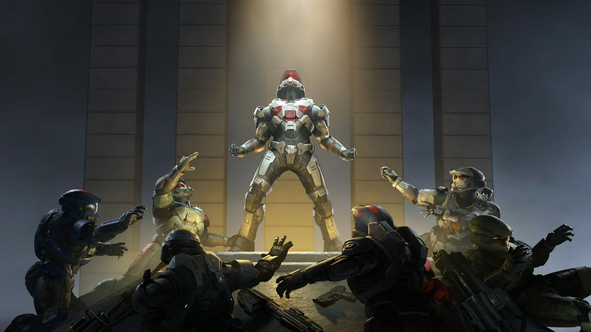

EMAIL: scarvajalf@itc.edu.co NAME: Santiago Carvajal Fernández UNIVERSITY: Escuela Tecnológica Instituto Técnico Central
Bogotá D.C
Colombia TELEPHONE: 3118884864 MARCH 13, 2024
In this letter I want to talk to you about Halo, a science fiction video game saga that has captivated
millions of players around the world. I invite you to embark on an epic journey through the
cosmos, where you will fight for the survival of humanity against formidable enemies and discover the
secrets of a
fascinating universe.
Halo Features:
Fight for the survival of humanity.
Face formidable enemies.
Discover the secrets of a fascinating universe.
VIDEOGAMES:
Halo: Combat Evolved (2001): The game that started the saga.
Halo 2 (2004): Continues the story of the Master Chief and explores the past of
the Covenant.
Halo 3 (2007): The epic conclusion of the original trilogy.
Halo 3: ODST (2009): A spin-off that unfolds from the perspective of an
ordinary human soldier.
Halo: Reach (2010): A prequel that chronicles the fall of the planet Reach to
the Covenant.
Halo 4 (2012): The beginning of a new trilogy.
Halo 5: Guardians (2015): Focuses on the conflict between the Master Chief and
Spartan Locke.
Halo Infinite (2021): The latest installment in the saga, which continues the
story of the Master Chief and introduces a new enemy: The Banished.

MICROSOFT COLOMBIA:
Microsoft Colombia
Microsoft Colombia is a subsidiary of Microsoft Corporation responsible for conducting the company's
commercial and business operations in the country. Some of the activities carried out by Microsoft Colombia
include:
Sales and Marketing: Microsoft Colombia handles the marketing and sale of Microsoft
products and services in the country. This includes software such as Windows, Office, Azure (cloud
services), as well as hardware such as Xbox, Surface, among others.
Customer Support and Services: The company provides technical support and services to
its customers and partners in Colombia, helping them implement, use, and maintain Microsoft's
technological solutions effectively.
Education and Training: Microsoft Colombia also participates in education and training
initiatives, working with educational institutions, businesses, and government organizations to promote
the use and adoption of Microsoft technology, as well as providing training and professional development
resources.
Innovation and Entrepreneurship: The company supports innovation and entrepreneurship
initiatives in Colombia, collaborating with startups, developers, and organizations to drive the growth
of the technological ecosystem in the country.
Corporate Social Responsibility: Microsoft Colombia also engages in corporate social
responsibility activities, contributing to projects and programs aimed at improving education, access to
technology, and community development in the country.
HALO 2 TRAILER: THE BEST VIDEOGAME FOR ME:
Reaction to Halo 2
The reaction to Halo 2 was overwhelmingly positive upon its release. Considered one of the most influential
games of its time, Halo 2 received praise from both critics and players for its significant improvements in
gameplay, story, and graphics compared to its predecessor. Here are some highlights of the reaction to Halo
2:
Praise from Critics:
Critics universally praised Halo 2 for its thrilling campaign, innovative multiplayer mode, and impact on
the
video game industry. The improvements in graphics, enemy and ally artificial intelligence, and deepening
of
the story were especially praised.
Commercial Success:
Since its release, Halo 2 became one of the best-selling games for the original Xbox console. It broke
sales
records on its first day and in the weeks following, making it one of the most successful entertainment
launches in history.
Multiplayer Innovations:
Halo 2 introduced the concept of online gaming on consoles on a large scale with its matchmaking system,
allowing players to engage in balanced matches based on their skill. This revolutionized console
multiplayer
gaming and laid the groundwork for future titles.
Cultural Impact:
Halo 2 became a cultural phenomenon, generating a massive fan base and contributing to the popularization
of
the Halo franchise in mainstream culture. Competitive tournaments were held, online communities were
created, and a variety of Halo-related products were released.